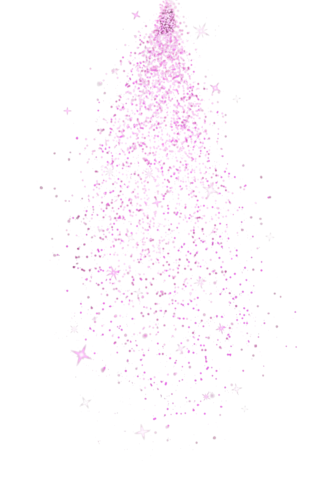
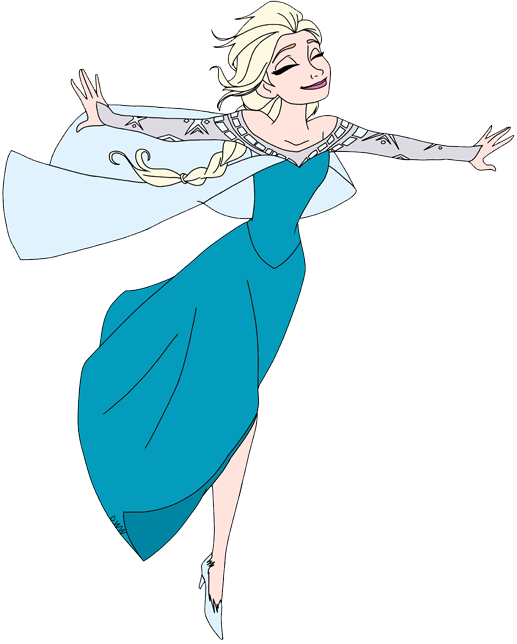
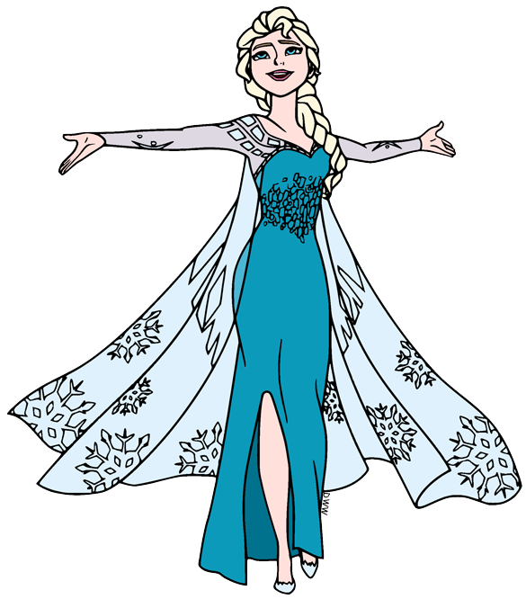
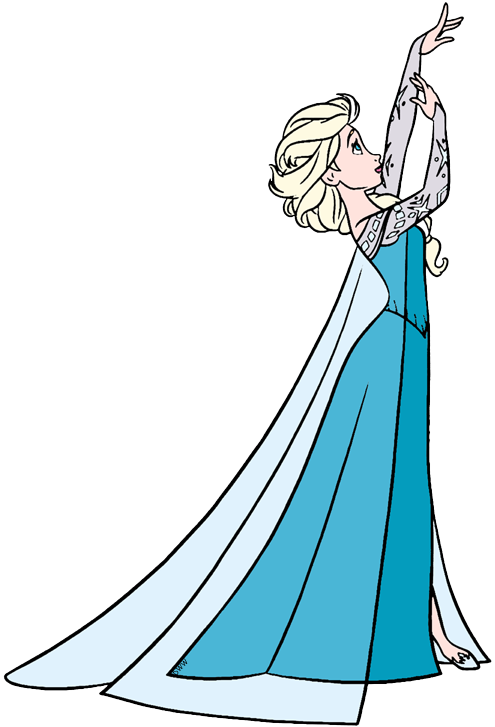
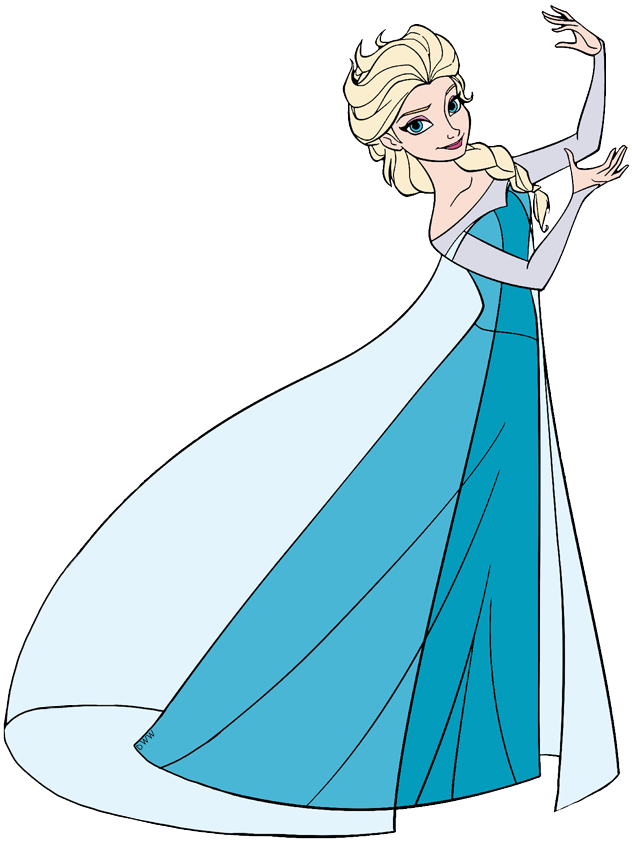
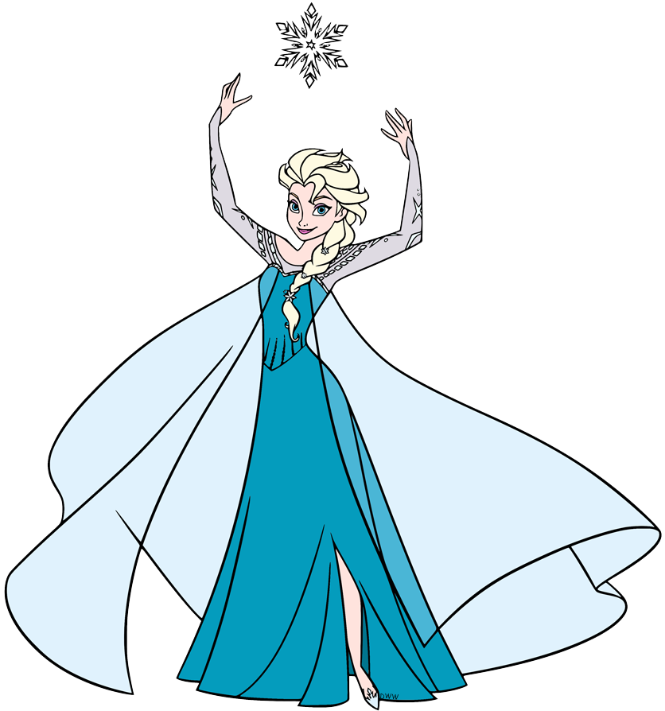
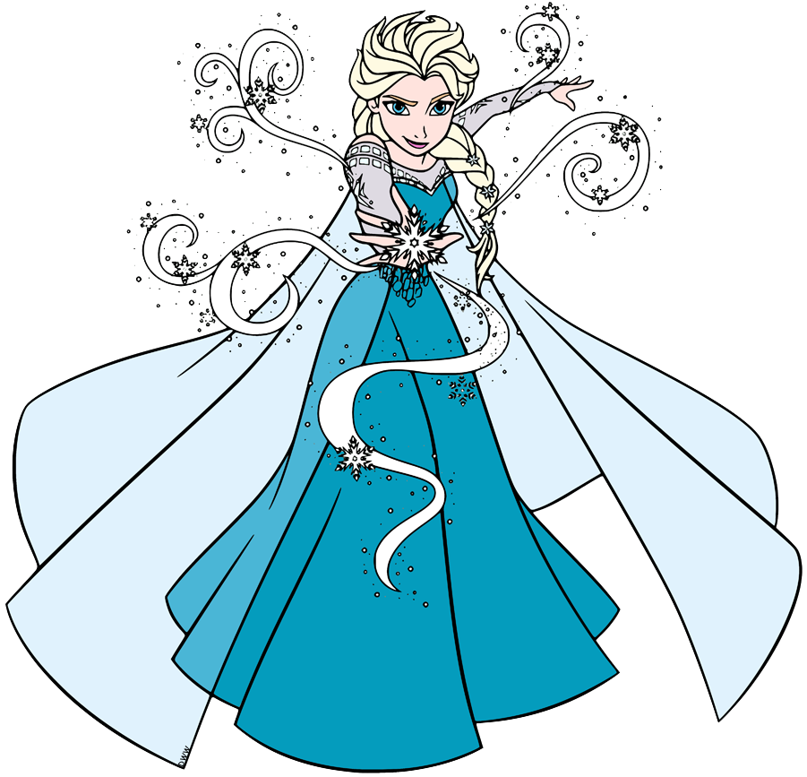
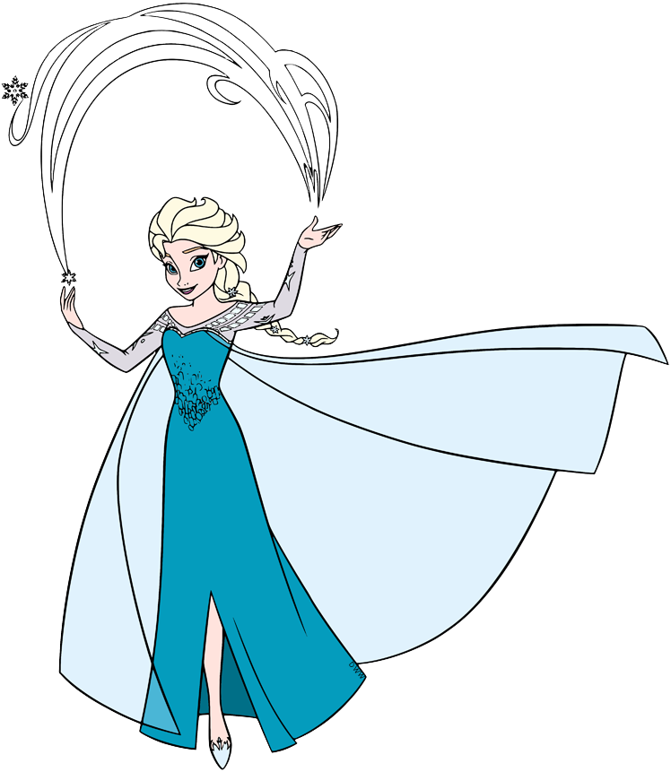
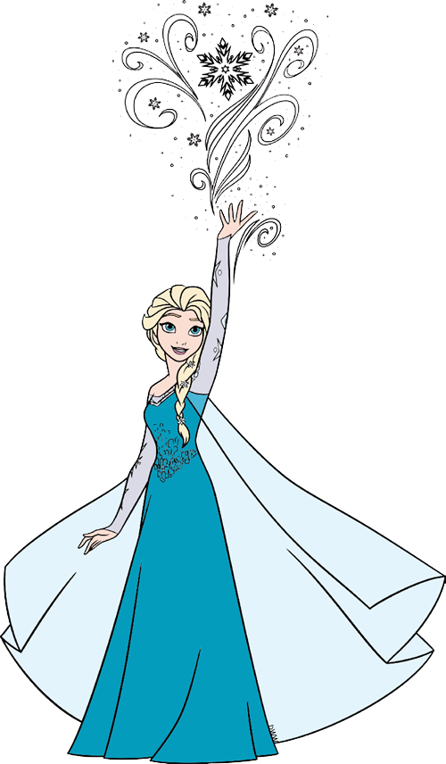

Mainu tere naal, tere naal
Tere naal hoya ae pyaar, hoya ae pyaar
Woh sitam, haaye, nazron ne dhaaya
Ho karam, haaye, mere Khudaya
Behki hawaon jaisi, mehki khizaaon si woh
Uski adayein, wallah-wallah!
Aanchal udaaye jaise baadal jhoom ke aaye
Uski haya pe mar na jaayein







